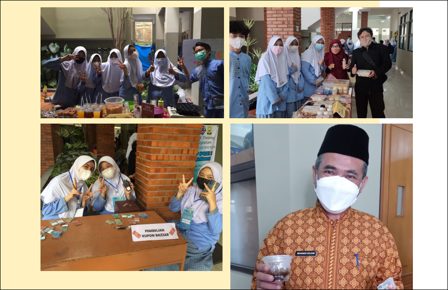

Event Sekolah
Sekolah event akan membantu kamu memiliki kemampuan mengatur acara, baik dalam skala kecil maupun besar.
PERINGATAN BULAN BAHASA DI SMP NEGERI 01 MATARAM

Sumpah pemuda merupakan bukti nyata perjuangan para pemuda bangsa dalam memperjuangkan hak bernegara. Dari sumpah yang tergaung dan sering kita ucapkan dalam peringatan di 28 Oktober itu tertulis “Kami putra dan putri Indonesia bertumpah darah yang satu, tanah air Indonesia. Kami putra dan putri Indonesia mengaku berbangsa yang satu, bangsa Indonesia. Kami putra dan putri Indonesia menjunjung bahasa persatuan, bahasa Indonesia.”, dari kalimat terakhir lahirlah Bulan Bahasa yang diresmikan oleh Kemendikbudristek pada tanggal 28 Oktober 1980, dan pada tanggal tersebut diperingati instansi-instansi atau lembaga-lembaga, termasuk sekolah kami SMP NEGERI 01 MATARAM.
Tahun 2022 ini adalah tahun pertama SMP NEGERI 01 MATARAM memperingati Bulan Bahasa. Melalui surat tugas dari Kepala Sekolah, Saya (penulis artikel) beserta anggota tim Bulan Bahasa diberi amanat untuk mengemas kegiatan Bulan Bahasa ini menjadi sebuah kegiatan yang bermakna bagi siswa-siswi SMP NEGERI 01 MATARAM. Tema yang diusung dalam kegiatan Bulan Bahasa ini adalah “Wujud Nasionalisme untuk Generasi Z melalui Bahasa dan Sastra”.
Wujud nasionalisme itu dijabarkan dalam kegiatan lomba pengembangan minat dan bakat siswa dalam berbagai mata pelajaran bahasa yang ada di SMP NEGERI 01 MATARAM, yaitu meliputi lomba sisindiran Bahasa Sunda, lomba baca dan cipta puisi Bahasa Indonesia, lomba Story Telling Bahasa Inggris dan lomba Mahfudhaat Bahasa Arab. Seluruh kelas mengirimkan perwakilannya untuk mengikuti semua perlombaan yang diadakan oleh tim Bulan Bahasa.
Kegiatan ini berlangsung selama lima hari, mulai tanggal 24-28 Oktober 2022. Setiap lomba mencari dua terbaik untuk ditampilkan di acara puncak sekaligus sebagai babak final. Hari pertama dimulai dengan pembukaan disambung dengan lomba sisindiran Basa Sunda yang dilaksanakan di Aula 2. Dua peserta yang masuk final adalah dari kelas 7C dan 8B. Kelanjutan lomba dilaksanakan esok hari. Lomba yang dilaksanakan adalah lomba cipta dan baca puisi. Kedua lomba dilaksanakan di dua tempat yaitu Masjid Al Muttaqien lantai 3 untuk Lomba Cipta Puisi dan kelas di lantai 3 untuk Lomba Baca Puisi. Lomba Mahfuudhaatt dilaksanakan hari ketiga. Ada yang dari lomba ini , banyak anak yang tidak terbiasa membaca kata Mutiara dalam Bahasa Arab, karenanya Ketika membacakan Mahfuudhaat seperti membaca Al Quran yang padahal sama sekali beda caranya. Lomba terakhir dilaksanakan pada hari keempat , Lomba Story Telling. Senang sekali melihat mereka berkreasi dengan gembira.
Puncak acara dari kegiatan Bulan Bahasa, dilaksanakan hari kelima. Pada hari ini semua finalis ditampilkan Kembali untuk dilombakan kembali sekaligus pengumuman pemenang. Siswa-siswi SMP NEGERI 01 MATARAM dikumpulkan di lapangan upacara untuk menyaksikan acara yang telah disusun oleh Tim Bulan Bahasa, dari mulai penampilan ekskul Iniseni, dilanjutkan penampilan, pengumuman, serta penyerahan piala semua pemenang tiap lomba, ada juga pengenalan musikalisasi puisi oleh Pak Temmi terakhir di seluh rangkaian acara di dengan resmi oleh kepala sekolah.
Kegiatan Bulan Bahasa ini sangat penting untuk anak-anak SMP NEGERI 01 MATARAM yang gagap terhadap Bahasa dan Sastra, khususnya Sastra. Ditengah gempuran kemajuan teknologi yang sangat pesat mereka melupakan literasi sastra. Anak-anak diperkenalkan pada sastra yang ramah dan menyenangkan . Semaga kegiatan ini dapat menumbuhkan minat dan bakat di bidang Bahasa dan Sastra untuk siswa SMP NEGERI 01 MATARAM.
Culinary Day di SMP NEGERI 01 MATARAM

Culinary day merupakan salah satu program OSIS SMP NEGERI 01 MATARAM untuk mengembangkan kemampuan kewirausahaan siswa. Biasanya, kegiatan ini dilaksanakan satu tahun sekali. Untuk tahun ajaran ini dilaksanakan setelah PAS (Penilaian Akhir Semester) ganjil yang lalu, tanggal 16-17 Desember 2022.

Event culinary day ini sangat dinantikan oleh seluruh siswa. Setiap kelas diberi satu 'stand' bazar, untuk menjual minimal dua jenis makanan/minuman. Dengan demikian, siswa akan saling berkolaborasi untuk mempersiapkan dagangan kelasnya. Mulai dari pengumpulan modal, pengolahan, menentukan harga jual, hingga menghias 'stand' bazar kelasnya sekreatif mungkin untuk menarik minat pembeli. Makanan dan minuman yang ditawarkan sangat beraneka ragam, dengan kisaran harga 2000 - 5000 rupiah saja.


Selain itu, kegiatan ini digelar untuk mengobati kerinduan para siswa untuk jajan di sekolah. Pokoknya seru. Karena banyaknya jajanan yang ditawarkan, rasanya ingin mencoba semuanya. Alhamdulillah, dengan tetap menerapkan protokol kesehatan, kegiatan berjalan dengan lancar. Para konsumen merasa puas dan penjual pun meraup keuntungan dari kegiatan tersebut. Semoga kelak akan lahir para enterpreneur muda yang sukses dan jujur dalam berniaga melalui pengalaman kegiatan ini.